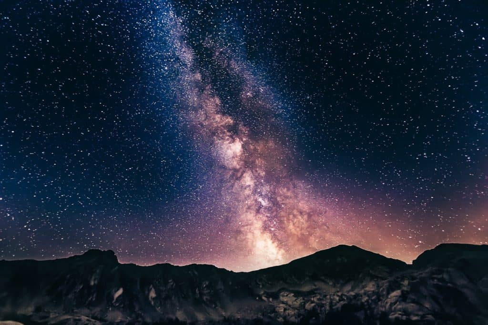
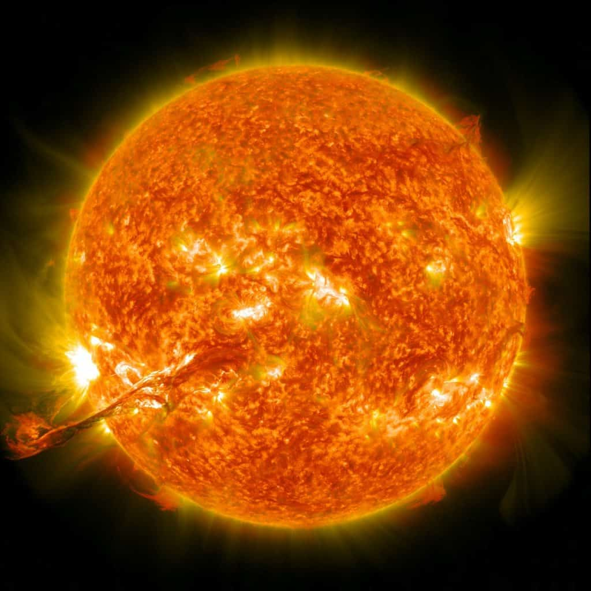
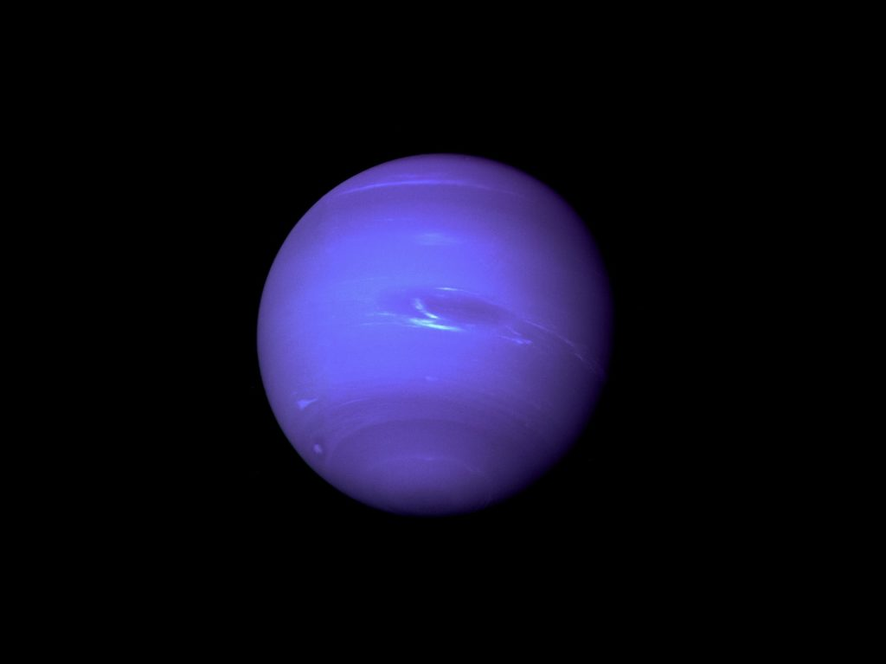
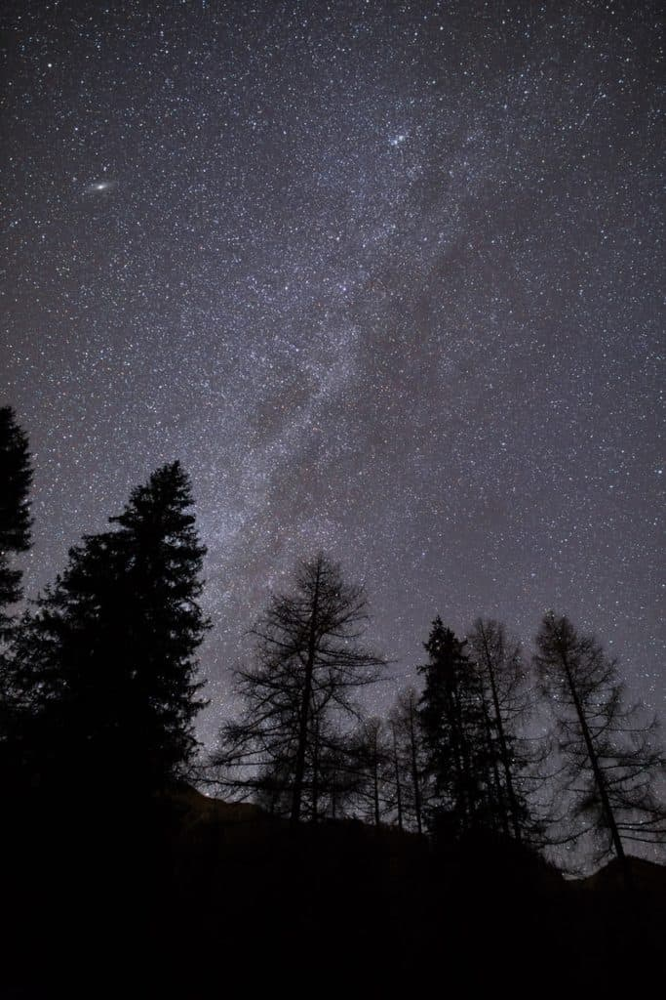

What is Solar System?
The solar system is the sun and everything that orbits around it. It includes the planets and their moons as well as numerous asteroids and comets. These objects are all held in orbit around the sun by the sun's strong gravity.
*Facts about Solar System:
1.The Solar System has Eight Planets
The Solar System is all the planets and other things in space that orbit (go around) our sun.
This includes the planets Earth, Mercury, Venus, Mars, Jupiter, Saturn, Uranus and Neptune as well as the dwarf planet Pluto, asteroids and comets.
The planets are in the order Mecury, Venus, Earth, Mars, Jupiter, Saturn, Neptune followed by the award planet Pluto. Here is how we remember to order, with this sentence that has the same letters as the order of planets plus Pluto.
My Very Easy Method Just Speeds Up Naming Planets.

2.Earth is only a very small part of The Solar System
Earth is a big place but within the solar system it is quite small. It would take 1.3 million planets the size of Earth to fill up the sun. Earth is a lot smaller than planets like Jupiter and Saturn.
3.The Solar System formed 4.6 Billion years ago
The Solar System was formed 4.6 billion years ago from a cloud of gas and dust called the solar nebula.
A shock wave from a nearby supernova (big star) explosion probably started it.
The Sun formed in the center, and the planets formed around it.
4.The Solar System is part of The Milky Way
The solar system is part of the Milky Way,There are at least between 250 to 500 billion stars in our Milky Way galaxy - there might even be more.That's at least 30 times more stars in The Milky Way than there are people on Earth.
There are over 700 known systems of planets orbiting stars.

5.The Sun is 93 million miles from the Earth
That's the same as taking 1000 trips to Australia!Even though it's so far away the light from the Sun only takes 8 minutes to travel to the Earth.

6.All planets and the Sun in the Solar System are shaped like balls
Once upon a time people thought the Earth was flat.We now know, and can prove through satellite pictures,that it is a sphere.All planets, as well as the Sun, are balls too.
7.Planets in our Solar System are different temperatures
The hottest planet is Venus with an average temperature of 460°C and the coldest planet is Uranus with an average temperature -220°C. By comparison Earth's average temperature is 15°C.
8.There are 181 moons in The Solar System
Scientists are always discovering more moons in The Solar System and arguing over whether Saturn or Jupiter have more moons.Currently Jupiter and Saturn both have 53 confirmed moons but they also both have more than 30 moons NASA haven’t confirmed.
There is also 552,894 asteroids and 3,083 comets in The Solar System!
9. Neptune was the last planet to be discovered in The Solar System
Neptune was the last planet to be discovered.On the night of 23rd September 1846 astronomers discovered Neptune through a telescope.

10.You can see Venus from Earth
You can see some of The Solar System from Earth. For example we have all seen the sun and our moon. You can also sometimes see Venus, which is also known as the evening or morning star. Yellow clouds made of sulfur cover the entire planet causing light from the sun to reflect off the surface meaning we can often see it at night.It is usually the first 'star' you will spot.This makes Venus the second brightest object in the night sky after the Moon
